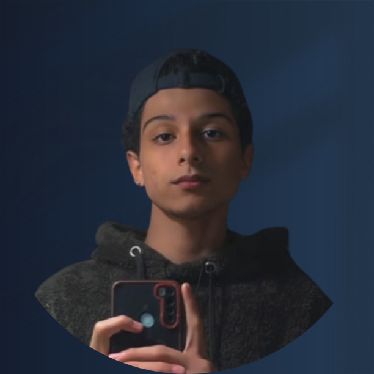

Nicolas de Pontes
Desenvolvedor Web Frontend Junior

Sobre
Olá! Me chamo Nicolas de Pontes, Moro em Sorocaba/SP.
Sou uma pessoa comum, porém tenho o incrivel interesse pela programação, isso desde os meus 15 anos. Sempre quis conquistar um emprego na área, e tenho como foco isso até hoje estudando sobre: Html,Css e JavaScript. Sempre procuro evoluir, e meus principais passatempos são jogar, assistir animes e ler mangás.